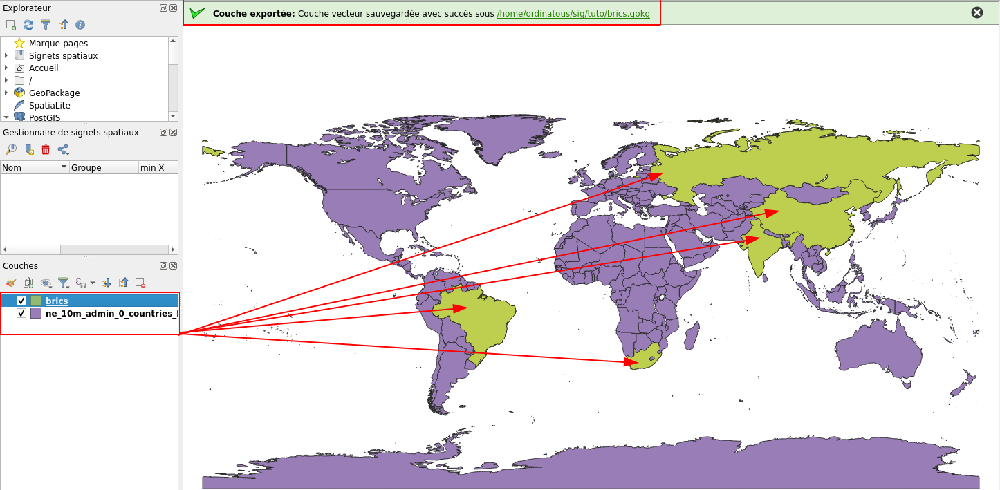

Charger une carte
Je vais utiliser le fond de carte Naturalearth disponible ici .
J’ai récupéré les archives en haute résolution : cultural et physique , et je vais glisser le fichier ne_10m_admin_0_countries_lakes.shp qui est un shapefile .
Il contient un ensemble de forme, ainsi qu’une table attributaire permettant de sélectionner des objets en fonction de leurs valeurs.
Sélectionner un objet
Soit via le menu ci-dessous en choisissant sélectionner une entité par valeur
Soit avec la fonction F3 qui ouvre directement le sélecteur de champs.
J’ai choisi admin en positionnant le sélecteur à égal . On peut faire clignoter la sélection, puis choisir : Ajouter à la sélection actuelle.
Enregistrer les entités sélectionnées
Clic droit sur la couche , puis choisir exporter puis enregistrer les entités selectionnées.

Cela créé une nouvelle couche .
Une fois cette couche créé et nommée, on retour sur la première , puis on sélectionne de nouvelles entitées, et ainsi de suite.
Amélioration de la carte
J’ai maintenant 3 groupes:
- le G20
- l’ Union Européenne
- et le BRICS
J’ai également ajouté des couches d’informations supplémentaires, comme les zones couvertes par les glaces, et j’ai fait apparaître les étiquettes sur les couches sélectionnées.
Mise en page
Une fonction de mise en page , permet de mettre la carte sur un document, d’y ajouter une légende, mais également d’autres images:
Ce travail est sous licence Attribution-NonCommercial 4.0
International.